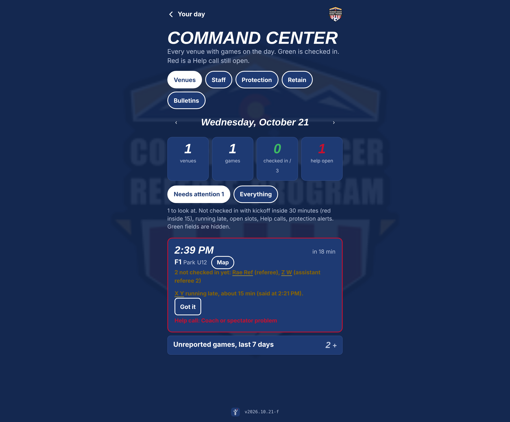

This page is for the person who has to explain it to a board. It says what your office hands over, what every role gets back, what the first season looks like, and what stays yours. Nothing here needs a developer on your side.
Two exports and one connection. Your office already produces all three.
Everyone signs in the same way, with a code sent to their email. What they see is decided by the unlocks your office gives them.
| Role | Screens | What changes for them |
|---|---|---|
| Referee | Your day, game card, rules, Library, fitness sign-up, Your year | Their games, countdown, one-tap check-in, running late, coaching notes on their own phone, in English or Spanish. The renewal reminder, with the link, until they renew. |
| Site coordinator | Command Center board, End of day | Needs attention first: not checked in, running late, open slots, help calls. Tap a name, text them. Hours filed from the phone. |
| Referee coach | Coaching, referee cards, the Evaluator, Fitness test sheet | Who is at my venue, who has had no feedback, one note per referee in the moment. Formal evaluations and the fitness test run from the same phone. |
| Director of Referee Development | Review, Coverage, Evaluations | Every note cleaned and read before release. Who has been seen, who has read their notes. Formal evaluations by request. |
| Director of Referee Operations | Setup, People, Scheduling, End of day | Events and rules, fitness tests and classes with sign-up, the not-yet-registered list with emails ready, payroll by venue or date range. |
| SRA | State of the program | Fifteen years of registration, retention, demographics, geography on a map, the season live, the renewal pace week by week. |

The board as it runs, shown with sample data.
This is Colorado's path, compressed. A program that already uses Assignr and the Learning Center can be live for a weekend inside a month.
Learning Center export loaded. Assigning platform connected. Your office checks a handful of referee cards against what it knows.
Coordinators, coaches, reviewers and the SRA get their roles. Rules pages go up for the competitions in season. Your badge is in the corner.
Referees at that venue get the sign-in email. The board runs. Coaches write. The reviewer releases that night. Sunday you have your first coverage numbers.
Each weekend adds venues. Fitness tests and classes move in. End-of-day reports replace the spreadsheet.
Every referee sees the renewal card until their new license shows up. Your office works the not-yet-registered list; assignors get the lapsed list for their groups. The SRA watches the count climb week by week.
Each referee gets their season: games, centers, venues, notes, fitness badge, where they rank. The leaderboard lets clubs that pay bonuses see their counts.
In a database under your program's own account, not ours. Access is by role, enforced in the database itself, not only in the app. If you ever stop, you keep everything.
No. The platform reads from it. Assignors keep working the way they do. Referees stop opening three apps.
Minors are flagged from the Learning Center data. Staff who reach out see the guardian's contact. Protection alerts reach the board. Nobody's phone location is tracked, for anyone.
It tidies coaching notes for tone and clarity. A person reads every note before it goes to a referee, and a flagged note cannot go out without a rewrite. It does not rate referees, assign games or decide anything.
The person who built it, by phone. Updates ship as files; your office never installs anything. The app is a web page that lives on the home screen of any phone.
It is a conversation, not a rate card. States pick the tools they want and pay per program or per person. Tournaments pay by the event, referee coaches by the seat. Ask for a demo and bring a weekend's schedule.